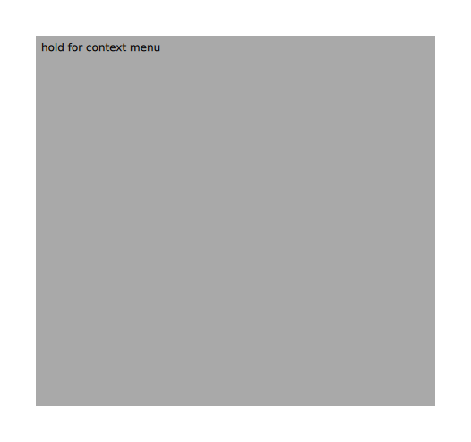

What's New in Qt 6.3
New and Restored Modules in Qt 6.3
Qt 6.3 adds the following module:
- Qt Language Server: implements the Language Server Protocol Specification and the JsonRpc 2.0 protocol. The module does not contain a public API.
Qt 6.3 reintroduces the following modules that were not present in Qt 6.2. All listed modules were ported to Qt 6 and the CMake build system.
- Qt PDF (in Technical Preview)
A more detailed list of changes to each module can be found in Changes to Qt Modules in Qt 6.
New Features in Qt 6.3
Qt Core Module
- Added QtFuture::whenAll() and QtFuture::whenAny() functions for combining multiple futures.
- Added QDir::mkdir() and QFile::open() overloads accepting a permission argument.
- QMetaType can now convert any QFuture<T> to QFuture<void>.
- Added QDirIterator::nextFileInfo(), to advance and get full file information.
- QLocale's mappings of language codes to and from Language values now have overloads specifying which ISO 639 code types to consider.
- QRegularExpressionMatch now has hasCaptured() methods to test whether a given group was captured at all.
- QProcessEnvironment gained a new enum and constructor that allows you to choose whether the process environment shall be inherited from the parent process when a respective QProcess is launched.
Warning: In older Qt versions, the default behavior was to inherit, although the documentation said it won't. Qt 6.3 changes the behavior of the default constructor to actually match the documentation. That is, launching a QProcess with a QProcessEnvironment created by QProcessEnvironment() will be launched in an empty environment. Use QProcessEnvironment(QProcessEnvironment::InheritFromParent) to revert to the old behavior.
Also, added method inheritsFromParent() to test for an instance constructed the new way.
- QVarLengthArray now has emplace() and emplace_back() methods.
- Time formats used by QLocale, QTime and QDateTime's parsing and serialization now recognize 'aP' and 'Ap' format specifiers to obtain an AM/PM indicator, using the locale-appropriate case for the indicator, where previously the author of a time format had to pick a case that might conflict with the user's locale. For QTime and QDateTime the locale is always C, whose indicators are uppercase. For QLocale, the case will now match that of amText() or pmText(). Previously, 'aP' would have been read as a lower-case indicator followed by a 'P' and 'Ap' as an upper-case indicator followed by a 'p'. The 'P' or 'p' will now be treated as part of the format specifier: if the prior behavior is desired, either use 'APp' or 'apP' as format specifier or quote the 'p' or 'P' in the format. The prior 'a', 'ap', 'A' and 'AP' specifiers are otherwise unaffected.
- QDebug can now stream QVarLengthArray objects.
- QObject::findChildren() now has an overload taking no name.
- Added overloads and method names to QSemaphore for greater compatibility with std::counting_semaphore and std::chrono.
- QJsonValue now has rvalue constructors taking QJsonArray and QJsonObject.
- QCborMap::fromJsonObject() and QCborArray::fromJsonArray() now have rvalue overloads.
- Added QByteArrayView::trimmed() to elide leading and trailing space.
- Added number-parsing methods to QByteArrayView.
- Added isValidUtf8() methods to QByteArray, QByteArrayView, and QUtf8StringView.
- Added QCryptographicHash::resultView() to provide a view over result().
- QStringBuilder now supports QByteArrayView.
- QUuid can now be constructed from QAnyStringView.
- QLocale now has a constructor taking a QStringView.
- QByteArrayList::join() now has an overload taking QByteArrayView.
- QCryptographicHash::addData() now has an overload taking QByteArrayView.
- qSwap() is now constexpr.
- Added new public CMake API:
- for setting up project-wide defaults: qt_standard_project_setup()
- for deploying applications: qt_generate_deploy_app_script() (in Technical Preview)
- for generating a qt.conf file at installation time: qt_deploy_qt_conf() (in Technical Preview)
- for deploying runtime dependencies at installation time: qt_deploy_runtime_dependencies() (in Technical Preview)
- for performing platform-specific tasks associated with a Qt project: qt_finalize_project() (in Technical Preview)
Qt GUI Module
- Calling QGuiApplication::setLayoutDirection() with a non-auto value now disables the auto-detection based on installed translators.
- URL handlers passed to QDesktopServices::setUrlHandler() must now be removed by calling unsetUrlHandler() before they are destroyed. Relying on the handler's destructor to implicitly unset them is deprecated.
- QVulkanWindow now enables all Vulkan 1.0 features that are reported as supported by the physical device.
Qt Quick Module
- New item added: TreeView.
- All pointer handlers have settable
parentproperties. - HoverHandler and WheelHandler have a
blockingproperty to control whether the hover and wheel events respectively propagate to items and handlers behind the handler'sparent. - TapHandler now has one more gesturePolicy value:
DragWithinBounds; it is similar toWithinBounds, except that even if the user drags while holding the point pressed, timeHeld is not reset during dragging, and the longPressed signal is emitted regardless of the drag threshold, if the user holds it that long. This is useful for implementing press-drag-release components such as menus (like the pie menu in the pointer handlers example) while usingtimeHeldto directly drive an "opening" animation.
- QQuickItem::clipRect() now provides the region visible in the viewport (the parent Flickable or Window), and can be used to limit scene graph node vertices as an optimization in custom items, at the cost of having updatePaintNode() called more often. See docs about the new QQuickItem::ItemObservesViewport and QQuickItem::ItemIsViewport flags.
- To save memory and startup time, Text and TextEdit now avoid generating scene graph nodes for large portions of text that are invisible because of falling outside the viewport (Flickable or Window).
- Text now renders horizontal rules from HTML or Markdown.
- In Text, horizontal rules and underline/overline/strikethrough lines can be colored by CSS rules included in HTML source.
import QtQuick Text { textFormat: Text.RichText wrapMode: Text.WordWrap width: 440 font.pointSize: 12 text: `<p><u style="color: green;">green with underline</u> <span style="text-decoration: underline; text-decoration-color: green;"> green underline</span></p> <p><s style="background-color: lightgrey;">plain strikethrough</s> <span style="text-decoration: line-through; text-decoration-color: orange;"> orange strikethrough</span></p> <p><span style="text-decoration: overline;">plain overline</span> <span style="text-decoration: overline; text-decoration-color: red;"> red overline</span></p>` }
- QQuickItem::dumpItemTree() has been added; it can be called from C++ (similar to QObject::dumpObjectTree()) or from QML, to show the qDebug-operator output for an item and all its children, indented to show the tree structure.
- TapHandler tapped, singleTapped and doubleTapped signals now have two arguments: the QEventPoint instance, and the
buttonbeing tapped. If you need a signal handler, you should write an explicit function to receive those arguments:onTapped: function(point, button) { ... } onDoubleTapped: (point, button)=> ... - DragHandler activeTranslation now holds the amount of movement since the drag gesture began. persistentTranslation holds the accumulated sum of movement that has occurred during subsequent drag gestures, and can be reset to arbitrary values between gestures.
Qt Quick Controls Module
- New controls added: TreeViewDelegate, Calendar, CalendarModel, DayOfWeekRow, MonthGrid, WeekNumberColumn.
Qt Quick Dialogs Module
- Added FolderDialog and MessageDialog. These are native dialogs on platforms that support it, and non-native Qt Quick dialogs on other platforms.
The non-native dialogs support all of the non-native styles: Basic, Fusion, Imagine, Material and Universal.
Qt Widgets Module
- QToolBar now supports scrolling with a kinetic wheel or track pad.
Several new QStyle enum values are available to allow styles to customize additional look and feel aspects of a widget-based UI:
- PM_LineEditIconMargin to customize the margin around an icon in a QLineEdit.
- SH_Table_AlwaysDrawLeftTopGridLines to control whether the left and top grid lines are always painted, also when the headers are hidden.
- SH_SpinBox_SelectOnStep to control whether changing the value using the up/down buttons should select the text.
- SP_TabCloseButton to specify an icon for the close button in the tab of a QTabBar
Qt Network Module
- QNetworkInformation learned transportMedium. A property that returns the transport medium of the primary network interface.
- QNetworkInformation also learned isMetered. A property that returns whether the network is metered.
Qt QML Module
- Added tech preview QML type compiler (
qmltc) that compiles QML type structure to C++. - Added several new warnings to qmllint which now uses compiler infrastructure.
- The header only qmlintegration module allows to mark types for registration in a QML module, without adding a dependency to qtdeclarative. Those can then be added to a QML module via the new qt_generate_foreign_qml_types() CMake API.
- qmlcachegen compiles suitable functions and expressions to C++ now, for improved performance.
- Added new public CMake API:
- for registering a target's foreign types in a QML module: qt_generate_foreign_qml_types() (in Technical Preview)
- for compiling QML code into C++: qt_target_compile_qml_to_cpp() (in Technical Preview)
- for deploying QML applications: qt_generate_deploy_qml_app_script() (in Technical Preview)
- for deploying the runtime components of QML modules at installation time: qt_deploy_qml_imports() (in Technical Preview)
- for querying information about a QML module: qt_query_qml_module() (in Technical Preview)
Qt Quick 3D Module
- Added ReflectionProbe, making it possible for models to show reflections.
- Particles3D: New
ParticleCustomShape3Delement which loads emitting shapes from custom CBOR binary files. - Particles3D: Sprite particles now have support for the 3D environment lights.
- Particles3D: New
DynamicBurstelement for declarative dynamic emitting and for emitting at trail start/end times. - Added ResourceLoader component for explicit setting of resource lifetimes (in Technical Preview)
- PrincipledMaterial: Added support for ClearCoat, Transmission, and Refraction.
- glTF2: Importers now support the following additional extensions: KHR_materials_clearcoat, KHR_materials_ior, KHR_materials_transmission, KHR_materials_volume
Qt WebEngine Module
- Now builds with Python 3 instead of Python 2
- Added API for replacing QML touch selection menu
- Added new public CMake API:
- for converting Hunspell dictionaries to the Qt WebEngine
.bdicbinary format: qt_add_webengine_dictionary()
- for converting Hunspell dictionaries to the Qt WebEngine
Qt Data Visualization Module
- Added a new wireframeColor property to set the wireframe color for a QSurface3DSeries in Q3DSurface.
- Added a new rowColors property to set different colors for rows of bars in Q3DBars.
- Added a new barSeriesMargin property to set the margin for individual bars in Q3DBars.
- Added a hasSeries function to check whether a series is already added in QAbstract3DGraph.
- Added support for 16-bit height maps.
Qt Positioning Module
- New DirectionAccuracy attribute is added for Android and iOS platforms. It represents the accuracy of the provided bearing.
Qt Bluetooth Module
- Extended the Windows implementation of QBluetoothLocalDevice. It reports the adapter state correctly, and allows to toggle its state. Support for connected/disconnected devices tracking is still missing.
- Extended QBluetoothDeviceInfo API to expose Bluetooth Low Energy service data as published during the advertisement.
Qt Wayland Compositor Module
- Added an API to create custom shell extensions. For instructions on usage, see the example.
- Added a Qt Shell which supports all windowing system features available in Qt.
- Added support for the presentation-time protocol.
- Added support for multiple input method protocols in the same server, in order to support clients from different sources.
Platform Changes
Technology Preview Platforms
WebAssembly
Several improvements have been made for Qt for WebAssembly. See the platform documentation at Qt for WebAssembly for details.
- Added support for copy/paste of images and html text to the system clipboard.
- Added SIMD support. Note that enabling SIMD requires building Qt from source.
- Added support for calling QEventLoop::exec() and QThread::exec() on secondary threads.
- Added support for calling QEventLoop::exec() and QDialog::exec() on the main thread using Emscripten Asyncify. Note that enabling asyncify requires building Qt from source.
- Drag-and-drop now works for asyncify-enabled builds.
- Added support for tunneling TCP and UDP sockets over WebSockets, using Emscriptens Emulated POSIX TCP Sockets over WebSockets. This support is limited to async sockets on the main thread.
Windows on ARM
Windows on ARM64 remains in Technology Preview as problems with optimized builds of Qt could not be resolved yet.
Mobile Platforms
Android
- The In-App purchasing demo and Qt 3D: Planets QML Example had android specific improvements.
- Updated Gradle to 7.2.0 and the Android Gradle Plugin (AGP) to 7.0.2 (requires JDK 11 or above).
- Added missing _make_aab target for CMake Android projects.
- Added multi-ABI build for CMake, see QT_ANDROID_ABIS.
- QML modules are now staged to a common directory named "android-qml" under the user's build folder. This acts as a common import path for The androiddeployqt Tool.
- The QML Test Bench now works for Android builds.
iOS
- CMake-based projects now generate a default launch screen.
Embedded Platforms
Boot to Qt
- Boot to Qt stack was updated to use Yocto 3.4 (honister).
- Qt PDF and Qt Language Server were included in Boot to Qt stack.
Other
Wayland
- Implemented support for
DataDeviceV3protocol. - Upgraded
wl_seatsupport to version 7. - Added support for selecting input method protocol, if the server supports multiple interfaces. This can be done by setting QT_WAYLAND_TEXT_INPUT_PROTOCOL to the name of the protocol.
List of API Changes
These pages contain an overview of API changes in Qt 6.3:
Additions to All Qt 6 Releases
A list of new APIs in Qt 6.0. | |
A list of new APIs in Qt 6.1. | |
A list of new APIs in Qt 6.2. | |
A list of new APIs in Qt 6.3. | |
A list of new APIs in Qt 6.4. | |
A list of new APIs in Qt 6.5. | |
A list of new APIs in Qt 6.6. | |
A list of new APIs in Qt 6.7. | |
Lists the new features in Qt 6.0. | |
Lists the new features in Qt 6.1. | |
Lists the new features in Qt 6.2. | |
Lists the new features in Qt 6.3. | |
Lists the new features in Qt 6.4. | |
Lists the new features in Qt 6.5. | |
Lists the new features in Qt 6.6. | |
Lists the new features in Qt 6.7. |